In the last section we studied some linear models, and in particular we looked at graphs and equations that described those models. In this section we review some techniques and terminology related to equations, inequalities, and their graphs.
Definition1.2.1.Solution.
A solution of an equation is a value of the variable that makes the equation true.
For example, \(x = \alert{−2}\) is a solution of the equation
A linear equation has no powers of the variable other than 1. It has at most one solution. We find the solution by transforming the equation into a simpler equivalent equation whose solution is obvious.
Example1.2.3.
Solve the equation \(~~3(2x-5)-4x=2x-(6-3x) \)
Solution.
We begin by simplifying each side of the equation.\(\alert{\text{[TK]}}~~\)
\begin{align*}
3(2x-5)-4x\amp =2x-(6-3x)\amp\amp\blert{\text{Apply the distrubutive law. }} \\
6x-15-4x\amp =2x-6+3x\amp\amp\blert{\text{Combine like terms. }} \\
2x-15\amp =5x-6\amp\amp\blert{\text{Add } {-5x+15} \text{ to both sides} } \\
-3x \amp = 9 \amp\amp \blert{\text{Divide both sides by }{-3.}} \\
x\amp = -3
\end{align*}
The solution is \(-3\text{.}\) You can check that substituting \(x=-3\) into the original equation produces a true statement.
Checkpoint1.2.4.Practice 1.
Find the solution of the equation \(16 - 2(3x - 1) = 4x + 2(x - 3)\text{.}\)
Answer.
\(x=2\)
Subsection1.2.2Linear Inequalities
Although a linear equation can have at most one solution, a linear inequality can have many solutions. For example, complete the table of values for the expression \(5 − 2x\text{:}\)
\(x\)
\(-2\)
\(-1\)
\(~0~\)
\(~1~\)
\(~2~\)
\(~3~\)
\(~4~\)
\(5-2x\)
\(\)
\(\)
\(\)
\(\)
\(\)
\(\)
\(\)
Now use your table to list at least three solutions of the inequality \(5 - 2x \lt 2\text{.}\)
Example1.2.5.
Use algebra to solve the inequality \(~~5 -2x \lt 2\text{.}\)
Solution.
We begin by isolating the term containing the variable, just as we do when solving a linear equation. We subtract 5 from both sides to obtain
\begin{equation*}
-2x \lt -3
\end{equation*}
Then we divide both sides by \(−2\) to find
\begin{equation*}
x \alert{\gt} \frac{-3}{-2}=\frac{3}{2} ~~~~~~~~~~~~~~~~ \blert{\text{Reverse the direction of the inequality.}}
\end{equation*}
Any value of \(x\) greater than \(\frac{3}{2}\) is a solution of the inequality. We write the solutions as \(x \gt \frac{3}{2}\text{.}\) Because we cannot list all of these solutions, we often illustrate them as a graph on a number line, as shown below.
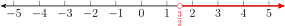
In the Example above, we used the following rule for solving linear inequalities.
Solving a Linear Inequality.
If we multiply or divide both sides of an inequality by a negative number, we must reverse the direction of the inequality.
Other than the rule stated in the box above, the rules for solving a linear inequality are the same as the rules for solving a linear equation.\(~~~\alert{\text{[TK]}}~~\)
Checkpoint1.2.6.QuickCheck 2.
Which of the following show the correct solutions of the inequality?
\(2x \gt -8~\) has solution \(~x \lt -4\)
\(-2x \gt -8~\) has solution \(~x \lt 4\)
\(x+2 \gt -8~\) has solution \(~x \lt -10\)
\(x-2 \gt -8~\) has solution \(~x \lt -6\)
Checkpoint1.2.7.Practice 2.
Solve the inequality \(2x + 1 \lt 7\text{,}\) and graph the solutions on a number line.
Answer.
\(x \lt 3\)
Subsection1.2.3Equations in Two Variables
An equation in two variables, such as
\begin{gather*}
-3x + 4y = 24
\end{gather*}
has many solutions. Each solution consists of an ordered pair of values, one for \(x\) and one for \(y\text{,}\) that together satisfy the equation (make the equation true.)
Checkpoint1.2.8.QuickCheck 3.
What is the solution of an equation in two variables?
A value of \(x\) that makes the equation true
An ordered pair of values \((x,y)\) that satisfy the equation
Solving the equation for \(y\) in terms of \(x\)
The graph of the equation
Example1.2.9.
Is \((2,7.5) \) a solution of the equation \(~-3x+4y=24\text{?}\)
Is \((4,3) \) a solution of the equation \(~-3x+4y=24\text{?}\)
\(\alert{\text{[TK]}}~~\)
Solution.
The ordered pair \((2,7.5) \) is a solution of the equation above, because it satifies the equation.
Find some more solutions of the equation \(-3x + 4y = 24\) and complete the table of values:
\(x\)
\(-12\)
\(-8\)
\(\hphantom{00}\)
\(0\)
\(\hphantom{00}\)
\(y\)
\(\hphantom{00}\)
\(\hphantom{00}\)
\(3\)
\(\hphantom{00}\)
\(9\)
Answer.
\(x\)
\(-12\)
\(-8\)
\(-4\)
\(0\)
\(4\)
\(y\)
\(-3\)
\(0\)
\(3\)
\(6\)
\(9\)
Because an equation in two variables may have many solutions, we can use a graph to visualize those solutions.
Definition1.2.11.Graph.
The graph of an equation in two variables is just a picture of all its solutions.
You might think it would be difficult to find all the solutions of an equation, but for a linear equation \(Ax + By = C\text{,}\) we can at least illustrate the solutions: all the solutions lie on a straight line. (Later on we can prove that this is true.)
Checkpoint1.2.12.QuickCheck 4.
True or false?
All the solutions of a linear equation in two variables lie on a straight line.
The equation \(-3x + 4y = 24\) is a linear equation.
The graph of an equation in two variables is a picture of its solutions.
If a point lies on the graph of an equation, it is a solution of the equation.
Example1.2.13.
The figure shows a graph of the equation \(~Ax + By = C\text{.}\) Which of the following equations are true?
\(\displaystyle 24B=C\)
\(\displaystyle Ap+Bq=C\)
\(\displaystyle Ag+Bh=C\)
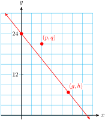
Solution.
The point \((0, 24)\) lies on the graph, so \(x = 0\text{,}\)\(y = 24\) is a solution of the equation. Thus, \(A \cdot 0 + B \cdot 24 = C\text{,}\) or \(24B = C\) is a true statement.
The point \((p, q)\) does not lie on the graph, so \(x = p\text{,}\)\(y = q\) does not satisfy the equation, and \(A p+ B q = C\) is a not true.
The point \((g,h )\) does lie on the graph, so \(x = g\text{,}\)\(y = h\) does satisfy the equation, and \(A g+ B h = C\) is a true statement.
Checkpoint1.2.14.Practice 4.
On the grid below, plot the points you found in Practice 3. All the points should lie on a straight line; draw the line with a ruler or straightedge. Which of the following points lie on the graph?
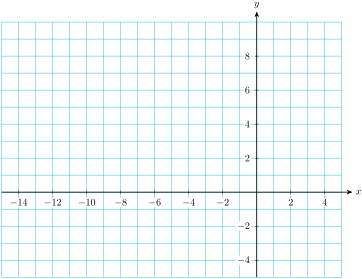
\(\displaystyle (-13,-4)\)
\(\displaystyle (-1.6, 4.8)\)
\(\displaystyle (1.25, 7)\)
Which of the points above satisfy the equation in Practice 3?
Answer.
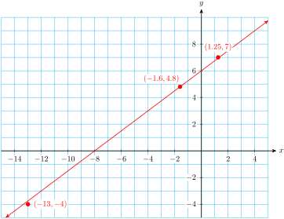
\((-1.6,4.8) \) lies on the graph and satisfies the equation.
Subsection1.2.4Graphical Solution of Equations and Inequalities
Here is a clever way to solve an equation in one variable by using a graph. Suppose we would like to solve the equation \(~150 = 285 - 15x\text{.}\) We start by looking at the graph of \(~y = 285 - 15x\text{.}\)
Example1.2.15.
Use the graph of \(~y = 285 - 15x~\) to solve the equation
\begin{equation*}
150 = 285 - 15x
\end{equation*}
Solution.
Compare the two equations in the problem. In the equation we want to solve, \(y\) has been replaced by \(\alert{150}\text{.}\) We begin by locating the point \(P\) on the graph for which \(y = 150\text{.}\)
Next we find the \(x\)-coordinate of point \(P\) by drawing an imaginary line from \(P\) straight down to the \(x\)-axis. The \(x\)-coordinate of \(P\) is \(x = 9\text{.}\)
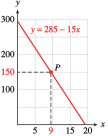
Thus, \(P\) is the point \((9,150)\text{,}\) and \(x = 9\) when \(y = 150\text{.}\) The solution we seek is \(x = 9\text{.}\)
You can verify the solution algebraically by substituting \(x = \alert{9}\) into the equation:
The relationship between an equation and its graph is an important one. For the previous example, make sure you understand that the following three statements are equivalent.
The point \((9, 150)\) lies on the graph of \(y = 285 - 15x\text{.}\)
The ordered pair \((9, 150)\) is a solution of the equation \(y = 285 - 15x\text{.}\)
\(x=9\) is a solution of the equation \(150 = 285 - 15x\text{.}\)
Checkpoint1.2.17.Practice 5.
Use the graph of \(y = 30 - 8x\) to solve the equation \(30 - 8x = 50\text{.}\) Follow the steps:
Step 1: Locate the point \(P\) on the graph with \(y = 50\text{.}\)
Step 2: Find the \(x\)-coordinate of your point \(P\text{.}\)
Verify your solution algebraically.
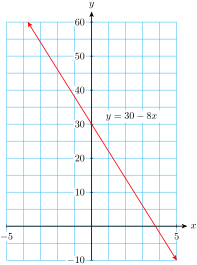
Answer.
\(x=-2.5\)
We can also use graphs to solve inequalities. Consider the inequality
\begin{equation*}
285-15x \ge 150
\end{equation*}
To solve this inequality means to find all values of \(x\) that make the expression \(285 -15x\) greater than or equal to 150. We could begin by trying some values of \(x\text{.}\) Here is a table obtained by evaluating \(285 − 15x\text{.}\)
\(x\)
\(0\)
\(2\)
\(4\)
\(6\)
\(8\)
\(10\)
\(12\)
\(285-15x\)
\(285\)
\(255\)
\(225\)
\(195\)
\(165\)
\(135\)
\(105\)
From the table, we see that values of \(x\) less than or equal to 8 are solutions of the inequality, but we have not checked all possible \(x\)-values. We can get a more complete picture from a graph.
Example1.2.18.
Use the graph of the equation \(~y = 285 - 15x~\) to solve the inequality
We look for points on the graph with \(y\)-coordinates greater than or equal to 150. These points are shown in color. Which \(x\)-values produced these points?
We can read the \(x\)-coordinates by dropping straight down to the \(x\)-axis, as shown by the arows. For example, the \(x\)-value corresponding to \(y=150\) is \(x=9\text{.}\) For larger values of \(285-15x\text{,}\) we must choose \(x\)-values less than 9. Thus, all values of \(x\) less than or equal to 9 are solutions, as shown on the \(x\)-axis.
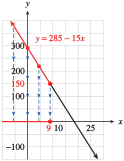
We write the solutions as \(x \le 9\text{.}\)
Checkpoint1.2.19.Practice 6.
Use the graph of \(y = 30 - 8x\) to solve the inequality \(30 - 8x \lt 14\text{.}\) Follow the steps:
Step 1: Locate the point \(P\) on the graph with \(y = 14\text{.}\)
Step 2: Find the \(x\)-coordinate of the point \(P\text{.}\)
Step 3: Which points on the graph have \(y \lt 14\text{?}\) Mark them on the graph.
Step 4: Find the \(x\)-coordinates of the points in Step 3. Mark them all on the \(x\)-axis.
Verify your solution algebraically.
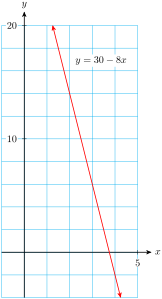
Answer.
\(x \gt 2\)
Subsection1.2.5Using a Graphing Utility
We can use a graphing utility to graph equations if they are written in the form \(~y = (\text{expression in }x)~\text{.}\) First, let’s review how to solve an equation for \(y\) in terms of \(x\text{.}\)
Example1.2.20.
Solve the equation \(~6x-5y=90~\) for \(y\) in terms of \(x\text{.}\)
Solution.
To begin, we isolate the \(y\)-term by subtracting \(6x\) from both sides of the equation.
\begin{align*}
-5y \amp = 90 - 6x \amp \amp \blert{\text{Divid both sides by }-5.}\\
y \amp = \dfrac{90}{-5} - \dfrac{6x}{-5} \amp \amp \blert{\text{Simplify.}}\\
y \amp = -18 + \dfrac{6}{5}x
\end{align*}
Note that the equation now has the form of the linear models we saw in Section 1.1.
Checkpoint1.2.21.Practice 7.
Solve for \(y\) in terms of \(x\text{:}\)\(\quad 10y-15x=6\)
Answer.
\(y = 1.5x + 0.6\)
Now we are ready to graph an equation with technology. For most graphing utilities, we follow three steps.
To Graph an Equation.
Enter the equation you wish to graph.
Select a graphing window.
Graph.
Choosing a graphing window corresponds to drawing the \(x\)- and \(y\)-axes and marking a scale on each axis when we graph by hand. The standard graphing window displays values from \(-10\) to \(10\) on both axes. We can start with this window and then adjust it if necessary.
Example1.2.22.
Use a graphing utility to graph the equation \(3x + 2y = 16\text{.}\)
Solution.
First, we solve the equation for \(y\) in terms of \(x\text{.}\)
\begin{align*}
3x+2y \amp = 16\amp\amp\blert{\text{Subtract } 3x \text{ from both sides.}} \\
2y\amp = -3x+16 \amp\amp\blert{\text{Divide both sides by 2.}} \\
y\amp = \frac{-3x}{2}+\frac{16}{2}\amp\amp \blert{\text{Simplify.}} \\
y\amp= -1.5x+8
\end{align*}
Now enter \(-1.5x+8\) after \(Y =\text{,}\) and choose the standard graphing window. The graph is shown at right.
Don’t forget to erase your graph when you are done.
Checkpoint1.2.23.Practice 8.
Solve the equation \(-3x + 4y = 24\) for \(y\) in terms of \(x\text{.}\)
Graph the equation in the standard window.
Answer.
\(\displaystyle y=\dfrac{3}{4}x+6 \)
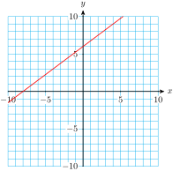
We can use the TRACE feature to find the coordinates of points on a graph.
Example1.2.24.
Use a graph to find a solution to the equation \(y = -2.6x - 5.4\) with \(y\)-coordinate \(-10.6\text{.}\)
Solution.
First we graph the equation \(y = -2.6x - 5.4\) in the window
Xmin\(=-5\)
Xmax\(=4.4\)
Ymin\(=-20\)
Ymax\(=15\)
We press TRACE, and a "bug" begins flashing on the display. The coordinates of the bug appear at the bottom of the display, as shown in the figure. We use the left and right arrows to move the bug along the graph. You can check that the coordinates of the point \((2, -10.6)\) do satisfy the equation \(y = -2.6x - 5.4\text{.}\)
Checkpoint1.2.25.Practice 9.
Graph the equation \(y=32x-42\) in the window:
Xmin\(=-4.7 \qquad\)
Xmax\(=4.7 \qquad\)
Xscl\(=1 \qquad\)
Ymin\(=-250 \qquad\)
Ymax\(=50 \qquad\)
Yscl\(=25 \qquad\)
Use the Trace feature to find the point that has \(y\)-coordinate \(-122\text{.}\)
Verify your answer algebraically by substituting your \(x\)-value into the equation.
What interval does each grid line represent on the horizontal axis? On the vertical axis?
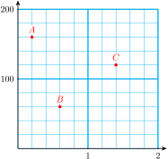
Find the coordinates of each point.
Skills Practice
Exercise Group.
For Problems 11–14, solve.
11.
\(5-2(3x-4)=28-2x \)
12.
\(0.0048z-0.12=-0.08+0.0016z\)
13.
\(0.25t + 0.10(t - 4) = 11.85\)
14.
\(0.12t + 0.08(t + 10,000) = 12,000\)
Exercise Group.
For Problems 15–18, solve the inequality and graph the solutions on a number line.
15.
\(3x-2 \gt 1+2x\)
16.
\(\dfrac{-2x-6}{-3} \gt 2 \)
17.
\(\dfrac{-2x-3}{2}\le -5 \)
18.
\(\dfrac{2x-3}{3}\le \dfrac{3x}{-2} \)
Exercise Group.
For Problems 19–24, solve for \(y\) in terms of \(x\text{.}\)
19.
\(2x-3y=-72\)
20.
\(4x+75y = 60,000\)
21.
\(7x=91-13y\)
22.
\(\dfrac{x}{80} + \dfrac{y}{400} = 1\)
23.
\(80x-360y=6120\)
24.
\(3x+\dfrac{3}{4}y =\dfrac{1}{2}\)
Applications
25.
The figure shows a graph of \(y =\dfrac{-x}{3} - 6\text{.}\)
Use the graph to find all values of \(x\) for which
\(\displaystyle y=-4\)
\(\displaystyle y\gt -4\)
\(\displaystyle y\lt -4\)
Use the graph to solve
\(\displaystyle \dfrac{-x}{3} - 6=-4\)
\(\displaystyle \dfrac{-x}{3} - 6\gt -4\)
\(\displaystyle \dfrac{-x}{3} - 6\lt -4\)
Explain why your answers to parts (a) and (b) are the same.
26.
The figure shows a graph of \(y = 0.24x-3.44\text{.}\)
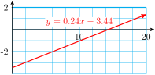
Use the graph to solve \(0.24x-3.44 = -2.\)
Use the graph to solve \(0.24x-3.44 \gt -2.\)
Solve the inequality in part (b) algebraically.
27.
The figure shows the graph of \(y = -2.4x + 2.32\text{.}\) Use the graph to solve:
\(\displaystyle 1.6 = -2.4x + 2.32\)
\(\displaystyle -2.4x + 2.32 = 0.4\)
\(\displaystyle -2.4x + 2.32\ge 1.6\)
\(\displaystyle 0.4\ge -2.4x + 2.32\)
28.
The figure shows the graph of \(y = 1.4x - 0.64\text{.}\) Use the graph to solve:
\(\displaystyle 1.4x - 0.64 = 0.2\)
\(\displaystyle -1.2 = 1.4x - 0.64\)
\(\displaystyle 1.4x - 0.64\gt 0.2\)
\(\displaystyle -1.2\gt 1.4x - 0.64\)
29.
Here is a graph of
\begin{gather*}
y=0.8-kx
\end{gather*}
Use the graph to solve:
\(\displaystyle 0.8-kx \ge 0.2\)
\(\displaystyle 0.5 \gt 0.8-kx\)
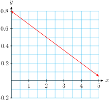
30.
Here is a graph of
\begin{gather*}
y=mx+b
\end{gather*}
Use the graph to solve:
\(\displaystyle mx+b=1200\)
\(\displaystyle -800=mx+b\)
\(\displaystyle mx+b>400\)
\(\displaystyle -1200\ge mx+b\)
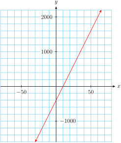
Exercise Group.
In Problems 31 and 32, graph each equation in the window
Xmin\(=-47 \qquad\)
Xmax\(=47 \qquad\)
Xscl\(=10 \qquad\)
Ymin\(=-31 \qquad\)
Ymax\(=31 \qquad\)
Yscl\(=10 \qquad\)
31.
Graph \(y=-0.4x + 3.7\text{.}\) Use the graph to solve the equation or inequality. Then check your answers algebraically.
Solve \(-0.4x+3.7=2.1\)
Solve \(-0.4x+3.7 \gt -5.1\)
32.
Graph \(y= 6.5 - 18x\text{.}\) Use the graph to answer the questions. Then check your answers algebraically.
For what value of \(x\) is \(y=-13.3\text{?}\)
For what value of \(x\) is \(y=24.5\text{?}\)
For what values of \(x\) is \(y \le 15.5\text{?}\)
For what values of \(x\) is \(y \ge -7.9\text{?}\)
33.
Kieran’s resting blood pressure, in mm Hg, is 120, and it rises by 6 mm for each minute he jogs on a treadmill programmed to increase the level of intensity at a steady rate.
Find a formula for Kieran’s blood pressure, \(p\text{,}\) in terms of time, \(t\text{.}\)
Graph the equation for \(p\) for \(0 \le t \le 10\text{.}\)
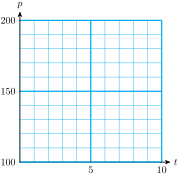
What is Kieran’s blood pressure after 3.5 minutes? Label this point on the graph.
Kieran’s blood pressure should not exceed 165 mm Hg. When will this level be reached? Label this point on the graph.
34.
When Francine is at rest, her cardiac output is 5 liters per minute. The output increases by 3 liters per minute for each minute she spends on a cycling machine with increasing intensity.
Find a formula for Francine’s cardiac output, \(c\text{,}\) in terms of time, \(t\text{.}\)
Graph the equation for \(c\) for \(0 \le t \le 10\text{.}\)
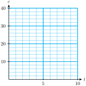
What will Francine’s cardiac output be after 6 minutes? Label this point on the graph.
When will Francine’s cardiac output exceed 14.5 liters per minute? Label this point on the graph.